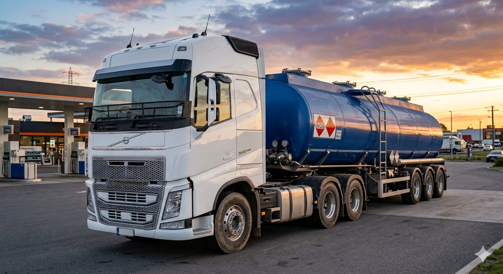

A Transdominicana Transportes e Terraplanagem Ltda coloca á disposição de seus clientes soluções
individualizadas, através de atendimento personalizado, para assegurar com eficiência e qualidade
a
prestação de bons serviços que acompanhem o desenvolvimento da sua empresa.
